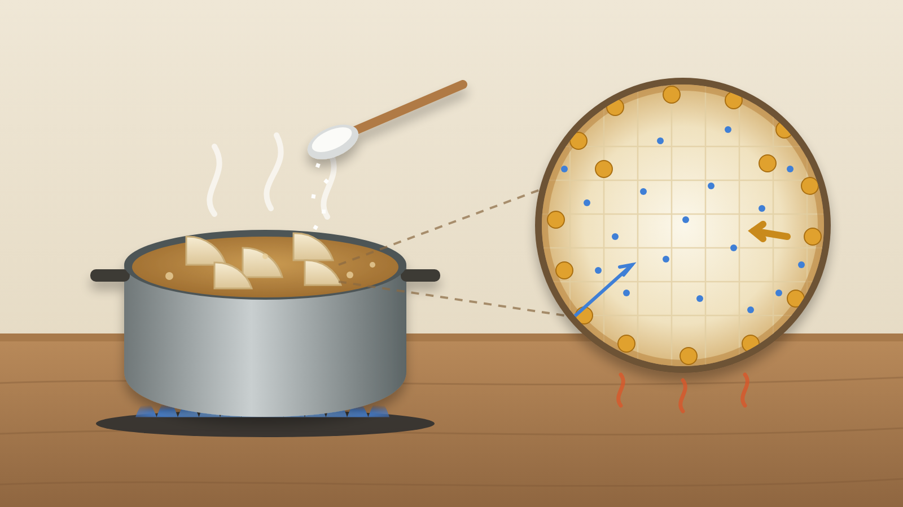

砂糖を先に入れると根菜へ味が入りにくいのか｜濃度と軟化の順序
大根の煮物を作るとき、「調味料はさしすせその順、砂糖が先」と教わった人は多いはずだ。でも、うっかりしょうゆと砂糖を一緒に入れてしまった日も、そこまで味が変わった気はしない。砂糖を先に入れるのは本当に意味があるのか。逆に、先に入れたせいで味が入りにくくなることはないのか。
結論は、普通の甘さの根菜の煮物なら、順番よりも「温かいまま煮る時間と置く時間」のほうが味の入り方を大きく左右する。 ただ、砂糖は塩より根菜の中へ進むのが遅い。だから同時に入れるなら、砂糖が追いつく時間をとる。甘露煮のように砂糖をたっぷり使う料理では、先に食材をやわらかくしてから砂糖を分けて入れたほうがいい。
塩は身軽、砂糖は大荷物
生の大根の細胞は、薄い膜で囲まれていて、調味料を簡単には通さない。ところが火にかけると、この膜は早い段階で働かなくなる。そこから先は、煮汁の濃い所から大根の中の薄い所へ、調味料が少しずつ広がっていく。
このとき、塩と砂糖では進む速さが違う。塩は粒が小さく、砂糖は粒が大きい。たとえるなら、混んだ駅の通路だ。手ぶらの人（塩）はすいすい奥へ進むが、大きなスーツケースを引く人（砂糖）は遅れる。ただし、駅の中が暖かいと、どちらも足取りが軽くなる。煮物でいえば、温度が高いほど調味料はよく広がる。
確認された結果と、そこから分かること
調味料の性質をまとめた塩事業センターと製糖工業会の解説では、塩のほうが砂糖より食材にしみ込む速さが大きく、同時に加えると砂糖は塩よりしみ込むのに時間がかかると説明している。煮豆に砂糖を一度に入れると、煮汁が急に濃くなり、豆から水が抜けて硬くなることがあるとも述べている。
大学の研究では、大根を加熱すると、中心の温度が上がり始めてすぐに細胞の膜の働きが失われることが確かめられた。さらに、やわらかく煮た大根と、わざと硬くした大根を塩水や砂糖水に漬けても、中へ入る塩や砂糖の量は変わらなかった。つまり「先に塩を入れると大根が締まって砂糖が入らない」という説明は、少なくとも大根では確かめられていない。
別の研究では、煮た大根やじゃがいもを保温しておく温度が高いほど、塩が中まで広がった。「冷めるときに味がしみる」という言い伝えは支持されず、冷めていく間も温かさが残っている時間に味が広がっていると考えられている。また、塩を入れた湯で大根やごぼうを煮ると、細胞同士のくっつきが弱まり、すき間が広がった。塩が根菜を硬くするというより、むしろやわらかくする方向に働いている。
一方、砂糖の濃い液でにんじんを下ゆですると硬さが保たれたという報告もある。砂糖は濃くなるほど、食材から水を引き出し、軟らかくなるのを遅らせる方向に働くと考えられる。
家庭では「砂糖は早め、ただし多いときは分けて」
これらの結果を家庭の煮物に当てはめると、さしすせそは「入れないと味が入らなくなる決まり」ではなく、「遅い砂糖に先に出発してもらう工夫」と考えるとしっくりくる。塩やしょうゆと一緒に入れても失敗にはならないが、砂糖だけ味が浅く感じやすい。だから、砂糖は早めに入れて、しょうゆは香りを残すために少しあとから入れる、という昔からの順番には十分な理由がある。
気をつけたいのは、砂糖をたくさん使う料理だ。最初から濃い砂糖の煮汁に入れると、根菜から水が抜け、やわらかくなるのが遅れる。甘めの煮物や甘露煮では、まず水やだしでやわらかくしてから、砂糖を2〜3回に分けて入れると、硬くなりにくい。
そして一番効くのは、火を止めたあとの過ごし方だ。氷水で急に冷ますより、ふたをして温かいまま置いたほうが、味は中まで進む。
大根の煮物（2〜3人分）なら、次のように進めよう。
- 大根400g（約1/3本）の皮をむき、2cm厚さのいちょう切りにする。
- 鍋に大根、だし400ml、砂糖大さじ1を入れて中火にかける。煮立ったら弱火にし、落としぶたをして10分煮る。
- しょうゆ大さじ1と1/2、みりん大さじ1を加え、さらに15〜20分、竹串がすっと通るまで煮る。
- 火を止めてふたをしたまま30分ほど置き、食べる前に温め直す。
- 残りは鍋のまま室温に放置せず、浅い容器に小分けして早く冷まし、冷蔵する。食べるときは全体を混ぜながら中まで温め直す。
甘めにしたいときや砂糖を倍以上使うときは、手順2を砂糖なしで始め、大根に竹串が半分ほど通るようになってから、砂糖を2回に分けて加えるとよい。
ほかの料理にも使える考え方
「小さい粒は速く、大きい粒は遅い。温かいほど速い」という考え方は、煮物以外にも使える。たとえば肉じゃがやかぼちゃの煮物で甘さが中まで届かないと感じたら、砂糖を増やす前に、火を止めてから温かいまま置く時間を延ばしてみるといい。翌日のほうがおいしい煮物は、冷めたから味が入ったのではなく、それまでに温かい時間が長くあったからだと考えられる。
黒豆や栗の甘露煮のように砂糖が多い料理では、「やわらかくしてから、甘さは何回かに分けて」と覚えておくと、硬くしわが寄る失敗を避けやすい。逆に、照り焼きや甘辛炒めのように表面に味をからめる料理では、中までしみ込ませる必要がないので、順番にこだわらず合わせ調味料を一度に入れて構わない。市販の合わせ調味料やめんつゆで煮るときも、順番を気にするより、煮る時間と置く時間を確保するほうが仕上がりに効く。
まとめ
砂糖は塩より中へ進むのが遅いので、早めに入れるのは理にかなっている。ただ、普通の甘さの根菜の煮物なら、先に塩やしょうゆが入ったせいで砂糖が入らなくなるわけではない。味を中まで届けたいなら、温かいまま煮る時間と、火を止めてふたをして置く時間をしっかりとる。砂糖をたっぷり使う料理だけは、先にやわらかくしてから甘さを分けて入れる。